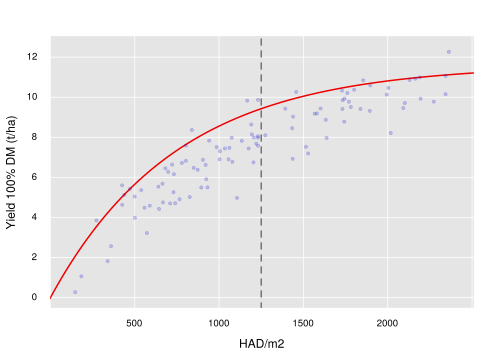
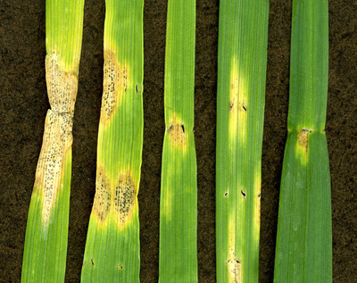
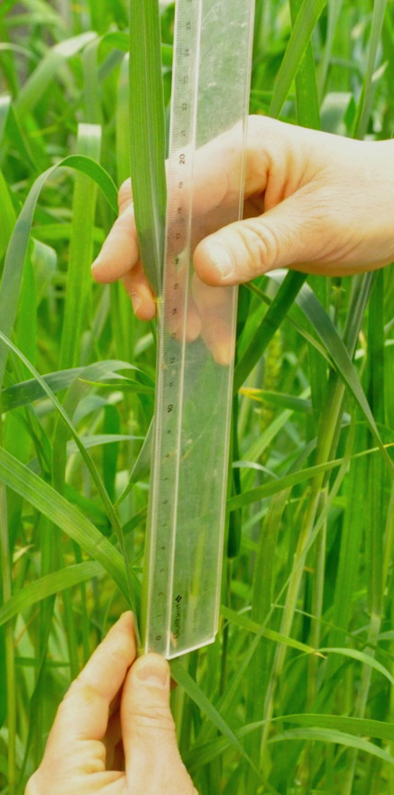

Tolerance of Wheat to Septoria tritici blotch
Francois COLLIN
fca.collin@gmail.com - manuscript: These.pdf
Supervisors:
Marie-Odile BANCAL, Pierre BANCAL,
John FOULKES
Sponsor: Arvalis
Grignon, the 27th of November 2018
(last update 2020-02-12))
Content
- Introduction
- Experiments
- Results - Discussion
Tolerance
Cobb, 1894: A comparable infection level by a disease on a crop does not lead to constant losses.
Ability of a plant or a crop to maintain performance,
fitness or a high quality characteristic in
the presence of expressed symptoms
, Ney et al. 2013
Ability of a plant or a crop to maintain performance,
fitness or a high quality characteristic in
the presence of expressed symptoms
, Ney et al. 2013
It is different from resistance or avoidance.
- Yield potential
- Losses
- Compensations
Potential yield
post-anthesis source/sink balance
During Scenescence
- End of uptake (N)
- Remobilization (NC)
- Reduction and photosynthesis stop (C)

Septoria tritici leaf blotch
STB - Zymoseptoria tritici
- Figures Ponomarenko et al, 2011
- Disease management
- Important economic losses
- Genotype tolerance potential
Tolerance

- Increase canopy area
- Bancal et al. 2015: uY = Y +E x ( 2.8 I1 - 44TGW - 0.042 GNm - 213 LAg)
- optimization of ligth interception
- photosynthesis efficiency
- Remobilisation
Rationale
Aims:
- Identification of STB-tolerance traits/mechanisms.
- Understanding of ecophysiological processes.
- Study of genotype/heritable trait variations + environment interaction
Hypothesis:
- Tolerance: genotype heritable traits
- Consistency of field and glasshouse experiments
- STB tolerance relies on physiological processes
Strategy:
- Data-mining study: acertain and propose complementary hypothesis based on historical data and holistic methods.
- Field and glasshouse experiments: targeting defined physiological processes using genotypes.
- Field with cultivars: verification.
Material and methods
Historical dataset
Rationale
- Bancal et al. 2015: tolerance is promoted by late senescence.
- Senescence depends on genotype traits.
- Senescence is a highly plastic (environment).
Target: Identification of genotype traits and environment effects that influence senescence and thereof tolerance.
Target
Materials
Bancal et al. 2015 - Nearly balanced dataset: 5 locations, 2 years, 9 genotypes
Methods
- Variable ranking? Random Forest
- y response to x variation? Multi-linear regression
- Variance E or G? Variance components analysis & Partial regressions.
Field 2014-15, Herefordshire
STB tolerance and grain source limitation
Rational: the grain-source availability is a tolerant trait.Tolerance-contrasting genotypes
Materials & Methods
- 6 genotypes (contrast tol.)
- +40 kg N/ha GS51
- spikelet-removal treatment
- fungicide-based contrast in STB (unsuccessful☹)
Glasshouse 2014-15
Rationale: genotype tolerance of STB is associated with traits in relation to nitrogen metabolism.Materials and methods:
- 4 tolerance-contrasting genotypes
- N stop before heading
- STB inoculation (unsuccessful☹)

Field 2015-16
Verification of highlighted traits
Rationale: Cultivar heading date variability results in tolerance contrast + Verification of potential tolerance traits highlighted previously in cultivars.Assumptions:
- Heigh HAD/grain → low degree of source limitation → tolerance
- Early heading date increase source availability
- Study of tolerance at the grain or the crop scale is equivalent
Materials and methods:
- 6 modern cultivars
- fungicide-based contrast in STB infection (success☺)
Results and Discussion
- New data
Tolerance: source/sink
Main causes of source/sink variations:
- F2016: unique STB → source avail. reduction.
- G2015: N stress → source avail. reduction.
- F2015: spklt rmvl:
- → decreased crop and shoot sink.
- → increased grain-source avail. and grain sink.
HAD: source variation
- HADm F2016 equivalent to G2015(N0)
- HADe F2015 stable comp. to F2016 and G2015 (shoot sel.)
Yield: sink variation
- F2016 close to boundary curve
- High in F2015 considering the low HADm
- Ye F2015(S0) close to F2016
- Ye low in G2015 (low PPFD environment)
For each grain?
- Highly saturated in G2015 (low GNe caused by low PPFD environment ☀)
Results and Discussion
- New data
- Quantification of tolerance
Limit of ratio-based estimations
intolerance = Δ Y / Δ HAD;
tolerance = Δ Y / Δ HAD
Improvement
- Several-year/location estimations (ADAS genotypes, E effect)
- The grain scale
- Several-method estimation (F2016, supported by other experiments)
Alternative
- Bancal et al. 2015: Environment epidemiologic index to allow for genotype tolerance comparison between environment.
- use a defined(???) boundary curve.
Grain and crop scale approach:
- relevancy saturating pattern of the source/sink relation ...
- ... but different nature of the asymptote:
- crop: light interception saturation (source)
- grain: max grain size
The grain scale for tolerance study
In the case of a HADm reduction:
- HADg does/doesn't saturates TGW: tolerance/intolerance.
Data:
- G2015: high correlation Tg with Tm (nitrogen stress, r=0.90**).
- HD: high correlation Tg with Tm (STB).
- F2016: Tm2 with Tg2, r=0.85***
- F2015:
- Tolerance of STB (T) and grain tolerance of spikelet removal (Tg): r=0.98***
- T and TGW(S1-S0): r=-0.85*
- Tg and TGW(S1-S0): r=-0.92**
Results and Discussion
- New data
- Quantification of tolerance
- Tolerance traits
Tolerance traits: Late sencescence
Late senescence, STB-tolerance trait:
- Impulse: Bancal et al 2015
- Confirmed in F2016 (STB-tolerance) and G2015 (N-tolerance)
- Confirm van den Berg et al 2017
Late senescence promoted by:
- Early heading date (Historical data HD, F2016)
- Large proportion of flag leaf (HD, F2016)
- But: large proportion of flag leaf and heading date are negatively associated (HD)
Tolerance traits: Canopy
Size
- Literature: contrary assumptions of canopy size (leaf area)
- Significant but inconsistent correlations:
- G2015: LA/grain cor.+ with Tg and Tm (phenotypes?)
- F2016: LA/grain cor.- with Tg and Tm
- Trade-off: partitioning LAI pre-anthesis vs potential yield
Distribution
- STB: upward propagation, light extinction coefficient, leaf inclination
- Literature:
- LAe1+ Foulkes2006
- LAe1- Bancal2015 (epidemic intensity?)
- Data:
- F2016: Cor.+ flag leaf (LAe~1, fLA1)
- HD: Larger fLA1 → later senescence time
- F2015: Cor.+ fLA3 (low epidemics)
- HD: neg. relat. fLA1 ∝ Heading date.
Leaf Photosynthetic rate and remobilisation
Data:
- G2015: flag-leaf Pmax & total Net Assimilation (grain filling), positive association with tolerance (n~=~4). No conclusive WSC data
- F2015, F2016: no corr. DM remob. with Tol.
N-related hypotheses (G2015)
- Higher N remob/shoot for tolerant G
- Relative contribution of the leaves is reduced for higher remob.
- Higher N remob. assoc. with late senesc. Can increased nitrogen remobilisation delay senescence?
- [GS44, NTol Cor.- Tol] VS [EndopeP, HAD Cor.+ with Tol]
Slope: 0.12 mg/mg
Slope: 0.55 mg/mg
TGW and grain number
Literature:
- GN/m2 cor.- Tol (Foulkes et al. 2006)
- TGW: cor.- Tol (Bancal et al. 2015)
Data:
- F2016: STB-tol cor.- TGW
- F2015: Spikelet reduction tol cor.+ TGW
Grain-source availability
Literature:
Wheat sink- or co-limited by sources; UK wheat breeding strategy reduced source limitation.
Data:
- Strong source-avail. contrast (TGW ↗9-33\%) corr.+ to tol.
- High yielding G regarding source-avail. in control.
- Variability of source limitation for equivalent-TGW G.
Questions: has the source/sink limitation been well assessed? Methods?
Results and Discussion
- New data
- Quantification of tolerance
- Tolerance traits
- Genotype × Environment
Genotype × Environment
- Lit.: Mixed models to estimate G considering multi-E trials; E epidemic index.
- Do the tolerance and traits depend on E?
- Improve resolution of experiments.
- Prediction in agronomic scenarii.
What about a E-tolerance?